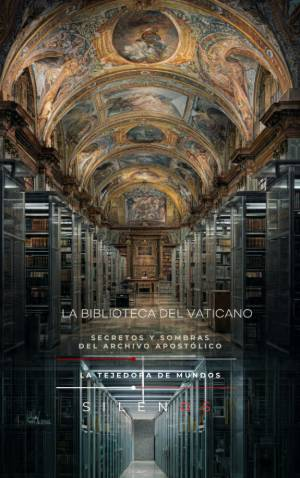

Illuminati
LA BIBLIOTECA DEL VATICANO: Secretos y Sombras del Archivo Apostólico
Sinopsis
Adéntrese en los pasillos prohibidos del archivo más enigmático del mundo. Este libro no es solo una crónica histórica; es un viaje a través de los siglos por las entrañas del poder, la fe y el conocimiento oculto que la Iglesia ha custodiado celosamente bajo el término Secretum. Un viaje desde las catacumbas hasta el búnker moderno Desde los humildes orígenes del Scrinium —donde los pergaminos se ocultaban en cestas de mimbre para sobrevivir a las persecuciones— hasta la sofisticada ingeniería de preservación actual con sus 85 kilómetros de estanterías, esta obra desvele la anatomía real de la Biblioteca Apostólica. Descubra cómo la memoria escrita pasó de ser una herramienta de supervivencia a convertirse en el mapa del alma occidental. Grandes misterios y expedientes silenciados A lo largo de sus páginas, explorará los casos que marcaron la historia y que aún hoy despiertan fascinación y controversia: El Juicio al Cadáver: El macabro Sínodo del Terror y sus consecuencias archivísticas. Ciencia y Fe: Las actas originales del proceso a Galileo Galilei y los expedientes del Santo Oficio sobre Giordano Bruno. Órdenes y Herejías: El Pergamino de Chinon y la absolución secreta de los Templarios, junto al rastro del Malleus Maleficarum. Lo Oculto: Manuales de nigromancia, grimorios reservados como el "Evangelio de Satán" y la frontera entre la alquimia y la ciencia. Sombras Modernas: Desde la infiltración de sociedades secretas y la Masonería hasta los escándalos financieros del Banco Ambrosiano en el siglo XX. Más que documentos, una responsabilidad ética Acompañe a figuras clave como Nicolás V, el Papa de los humanistas, o Bartolomeo Platina en su esfuerzo por organizar el caos documental. El libro analiza también los desafíos del siglo XX, incluyendo los archivos del silencio durante la Segunda Guerra Mundial y el misterio del Tercer Secreto de Fátima. LA BIBLIOTECA DEL VATICANO es una invitación a entender que la historia no solo se escribe con tinta, sino con los criterios de quienes decidieron qué debía salir a la luz y qué debía permanecer en la sombra. Una lectura imprescindible para quienes buscan rigor histórico y el magnetismo de lo desconocido.